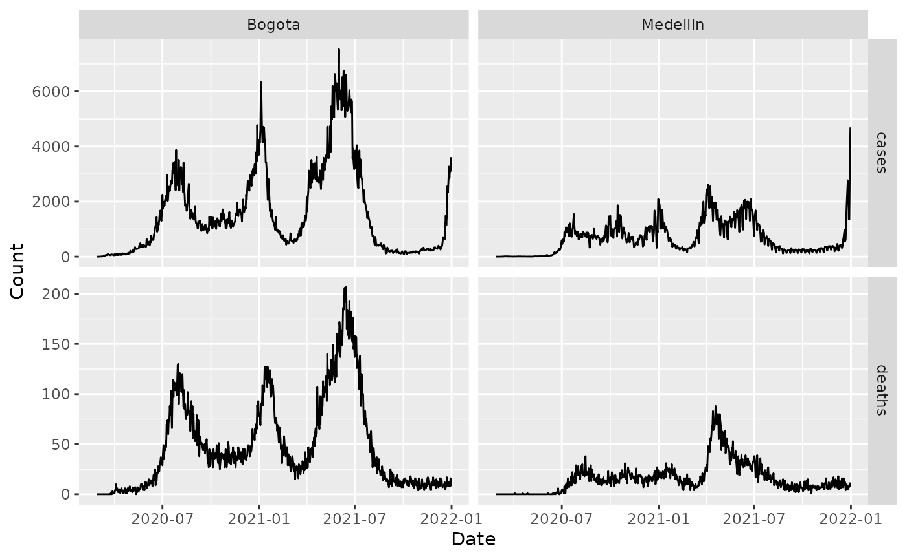
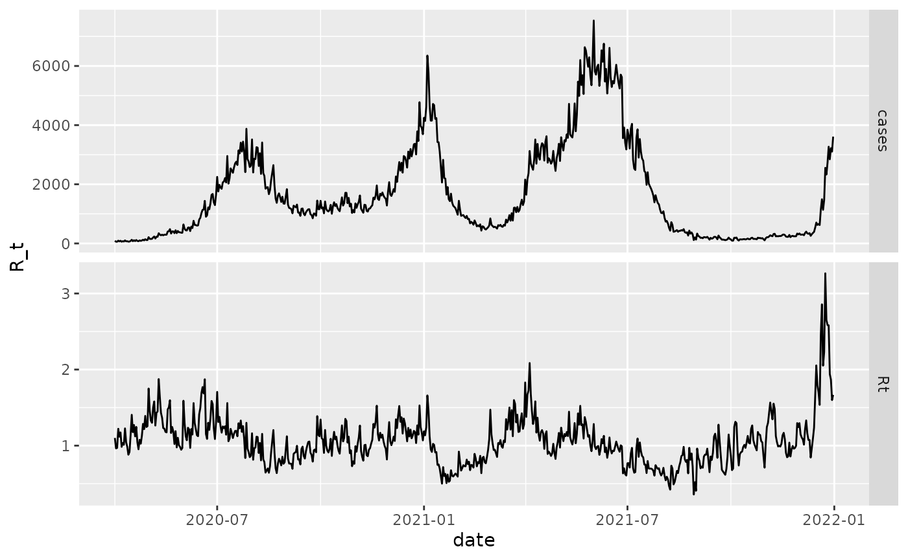
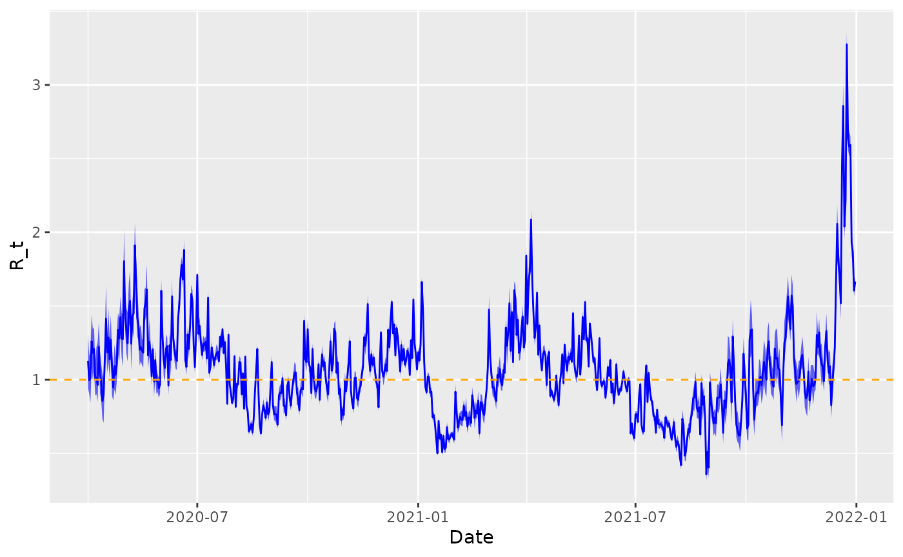

Fitting real COVID-19 case data
fitting_real_covid19_data.Rmd
library(epidp)
library(ggplot2)
library(dplyr)
#>
#> Attaching package: 'dplyr'
#> The following objects are masked from 'package:stats':
#>
#> filter, lag
#> The following objects are masked from 'package:base':
#>
#> intersect, setdiff, setequal, union
library(magrittr)
library(purrr)
#>
#> Attaching package: 'purrr'
#> The following object is masked from 'package:magrittr':
#>
#> set_names
library(tidyr)
#>
#> Attaching package: 'tidyr'
#> The following object is masked from 'package:magrittr':
#>
#> extractEstimating for Bogota using only the case data
We first load the COVID-19 data for Colombia and graph it.
# load data
data("covid_colombia_cases_deaths_mobility")
# plot
covid_colombia_cases_deaths_mobility %>%
pivot_longer(c(cases, deaths)) %>%
ggplot(aes(x = date, y = value)) +
geom_line() +
facet_grid(vars(name), vars(city),
scales = "free"
) +
xlab("Date") +
ylab("Count") We first estimate for Bogota using only the case data using optimisation to give us a quick set of estimates.
df_bogota <- covid_colombia_cases_deaths_mobility %>%
filter(city == "Bogota")
# generate serial interval for COVID-19 based on reasonable mean, sd
mean_si <- 6.5
sd_si <- 4.03
w <- generate_vector_serial(nrow(df_bogota), mean_si, sd_si)
# fit using optimisation
fit <- fit_epifilter(
N = nrow(df_bogota),
C = df_bogota$cases,
w = w,
is_sampling = FALSE,
as_vector = FALSE
)
# plot
R <- fit$par$R
df_bogota %>%
mutate(Rt = R) %>%
select(date, Rt, cases) %>%
filter(date >= as.Date("2020-04-01")) %>%
pivot_longer(-date) %>%
ggplot(aes(x = date, y = value)) +
geom_line() +
scale_color_brewer("R_t", palette = "Dark2") +
ylab("R_t") +
facet_grid(vars(name), scales = "free") We now fit using a fully Bayesian framework which outputs uncertainty.
fit <- fit_epifilter(
N = nrow(df_bogota),
C = df_bogota$cases,
w = w,
is_sampling = TRUE,
iter = 50,
chains = 1 # as CRAN does not allow multiple cores
)
#>
#> SAMPLING FOR MODEL 'epifilter' NOW (CHAIN 1).
#> Chain 1:
#> Chain 1: Gradient evaluation took 0.014929 seconds
#> Chain 1: 1000 transitions using 10 leapfrog steps per transition would take 149.29 seconds.
#> Chain 1: Adjust your expectations accordingly!
#> Chain 1:
#> Chain 1:
#> Chain 1: WARNING: There aren't enough warmup iterations to fit the
#> Chain 1: three stages of adaptation as currently configured.
#> Chain 1: Reducing each adaptation stage to 15%/75%/10% of
#> Chain 1: the given number of warmup iterations:
#> Chain 1: init_buffer = 3
#> Chain 1: adapt_window = 20
#> Chain 1: term_buffer = 2
#> Chain 1:
#> Chain 1: Iteration: 1 / 50 [ 2%] (Warmup)
#> Chain 1: Iteration: 5 / 50 [ 10%] (Warmup)
#> Chain 1: Iteration: 10 / 50 [ 20%] (Warmup)
#> Chain 1: Iteration: 15 / 50 [ 30%] (Warmup)
#> Chain 1: Iteration: 20 / 50 [ 40%] (Warmup)
#> Chain 1: Iteration: 25 / 50 [ 50%] (Warmup)
#> Chain 1: Iteration: 26 / 50 [ 52%] (Sampling)
#> Chain 1: Iteration: 30 / 50 [ 60%] (Sampling)
#> Chain 1: Iteration: 35 / 50 [ 70%] (Sampling)
#> Chain 1: Iteration: 40 / 50 [ 80%] (Sampling)
#> Chain 1: Iteration: 45 / 50 [ 90%] (Sampling)
#> Chain 1: Iteration: 50 / 50 [100%] (Sampling)
#> Chain 1:
#> Chain 1: Elapsed Time: 15.709 seconds (Warm-up)
#> Chain 1: 21.525 seconds (Sampling)
#> Chain 1: 37.234 seconds (Total)
#> Chain 1:
#> Warning: The largest R-hat is NA, indicating chains have not mixed.
#> Running the chains for more iterations may help. See
#> https://mc-stan.org/misc/warnings.html#r-hat
#> Warning: Bulk Effective Samples Size (ESS) is too low, indicating posterior means and medians may be unreliable.
#> Running the chains for more iterations may help. See
#> https://mc-stan.org/misc/warnings.html#bulk-ess
#> Warning: Tail Effective Samples Size (ESS) is too low, indicating posterior variances and tail quantiles may be unreliable.
#> Running the chains for more iterations may help. See
#> https://mc-stan.org/misc/warnings.html#tail-ess
# extract posterior quantiles
R_draws <- rstan::extract(fit, "R")[[1]]
lower <- apply(R_draws, 2, function(x) quantile(x, 0.025))
middle <- apply(R_draws, 2, function(x) quantile(x, 0.5))
upper <- apply(R_draws, 2, function(x) quantile(x, 0.975))
# plot
df_bogota %>%
mutate(
lower = lower,
middle = middle,
upper = upper
) %>%
select(date, lower, middle, upper) %>%
filter(date >= as.Date("2020-04-01")) %>%
ggplot(aes(x = date)) +
geom_ribbon(aes(ymin = lower, ymax = upper), fill = "blue", alpha = 0.6) +
geom_line(aes(y = middle), colour = "blue") +
geom_hline(yintercept = 1, linetype = 2, colour = "orange") +
xlab("Date") +
ylab("R_t")
Probing the drivers of using mobility data
We assume a relationship between workplace mobility and of the form:
where represents the components of unrelated to workplace mobility.
We now fit this model using epidp.
X <- tibble(
cons = rep(1, nrow(df_bogota)),
m = df_bogota$workplaces
) %>%
mutate(
m = scale(m)[, 1]
) %>%
as.matrix()
fit <- fit_epifilter_covariates(
N = nrow(df_bogota),
C = df_bogota$cases,
w = w,
X = X,
is_sampling = TRUE,
iter = 50, # probably too few iterations
chains = 1 # as CRAN does not allow multiple cores; should run with more cores
)
#>
#> SAMPLING FOR MODEL 'epifilter_covariates' NOW (CHAIN 1).
#> Chain 1:
#> Chain 1: Gradient evaluation took 0.01516 seconds
#> Chain 1: 1000 transitions using 10 leapfrog steps per transition would take 151.6 seconds.
#> Chain 1: Adjust your expectations accordingly!
#> Chain 1:
#> Chain 1:
#> Chain 1: WARNING: There aren't enough warmup iterations to fit the
#> Chain 1: three stages of adaptation as currently configured.
#> Chain 1: Reducing each adaptation stage to 15%/75%/10% of
#> Chain 1: the given number of warmup iterations:
#> Chain 1: init_buffer = 3
#> Chain 1: adapt_window = 20
#> Chain 1: term_buffer = 2
#> Chain 1:
#> Chain 1: Iteration: 1 / 50 [ 2%] (Warmup)
#> Chain 1: Iteration: 5 / 50 [ 10%] (Warmup)
#> Chain 1: Iteration: 10 / 50 [ 20%] (Warmup)
#> Chain 1: Iteration: 15 / 50 [ 30%] (Warmup)
#> Chain 1: Iteration: 20 / 50 [ 40%] (Warmup)
#> Chain 1: Iteration: 25 / 50 [ 50%] (Warmup)
#> Chain 1: Iteration: 26 / 50 [ 52%] (Sampling)
#> Chain 1: Iteration: 30 / 50 [ 60%] (Sampling)
#> Chain 1: Iteration: 35 / 50 [ 70%] (Sampling)
#> Chain 1: Iteration: 40 / 50 [ 80%] (Sampling)
#> Chain 1: Iteration: 45 / 50 [ 90%] (Sampling)
#> Chain 1: Iteration: 50 / 50 [100%] (Sampling)
#> Chain 1:
#> Chain 1: Elapsed Time: 2.92 seconds (Warm-up)
#> Chain 1: 47.531 seconds (Sampling)
#> Chain 1: 50.451 seconds (Total)
#> Chain 1:
#> Warning: There were 1 transitions after warmup that exceeded the maximum treedepth. Increase max_treedepth above 10. See
#> https://mc-stan.org/misc/warnings.html#maximum-treedepth-exceeded
#> Warning: There were 1 chains where the estimated Bayesian Fraction of Missing Information was low. See
#> https://mc-stan.org/misc/warnings.html#bfmi-low
#> Warning: Examine the pairs() plot to diagnose sampling problems
#> Warning: The largest R-hat is NA, indicating chains have not mixed.
#> Running the chains for more iterations may help. See
#> https://mc-stan.org/misc/warnings.html#r-hat
#> Warning: Bulk Effective Samples Size (ESS) is too low, indicating posterior means and medians may be unreliable.
#> Running the chains for more iterations may help. See
#> https://mc-stan.org/misc/warnings.html#bulk-ess
#> Warning: Tail Effective Samples Size (ESS) is too low, indicating posterior variances and tail quantiles may be unreliable.
#> Running the chains for more iterations may help. See
#> https://mc-stan.org/misc/warnings.html#tail-ess
print(fit, "beta[2]")
#> Inference for Stan model: epifilter_covariates.
#> 1 chains, each with iter=50; warmup=25; thin=1;
#> post-warmup draws per chain=25, total post-warmup draws=25.
#>
#> mean se_mean sd 2.5% 25% 50% 75% 97.5% n_eff Rhat
#> beta[2] -0.07 0.01 0.01 -0.09 -0.07 -0.07 -0.06 -0.04 6 1.4
#>
#> Samples were drawn using NUTS(diag_e) at Fri Oct 25 14:17:24 2024.
#> For each parameter, n_eff is a crude measure of effective sample size,
#> and Rhat is the potential scale reduction factor on split chains (at
#> convergence, Rhat=1).This negative association probably is a result of individuals responding to the COVID-19 pandemic conditions or governmental policy.